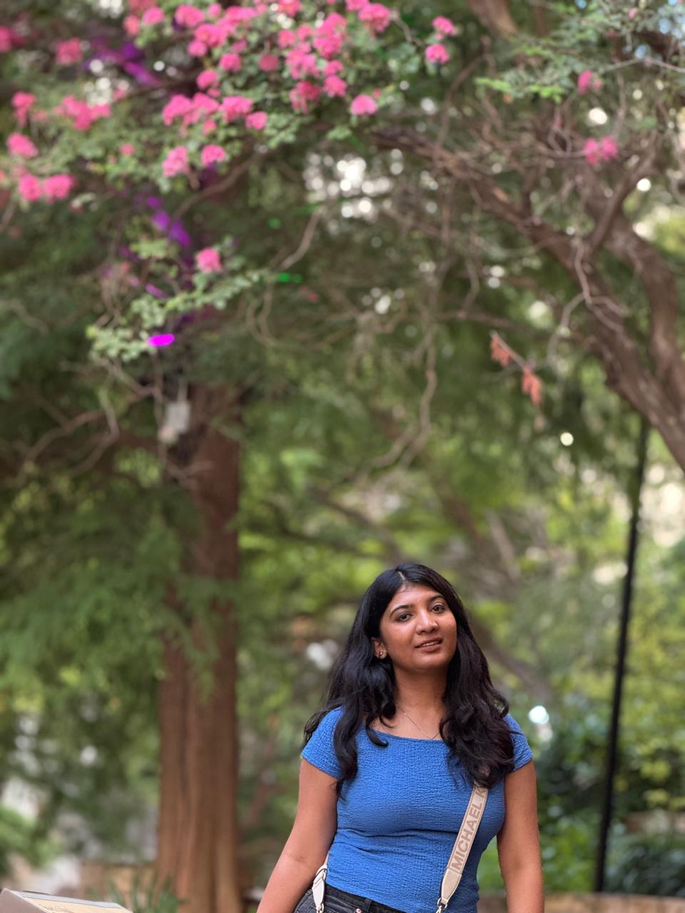

Programming & Scripting
Open to internships & new grad roles · May 2026
Hi, I’m Rakshitha 👋
I build scalable data pipelines,
cloud-native systems & analytics platforms.
Master’s student in Information Technology at Arizona State University, focusing on data engineering, analytics, and cloud platforms. I enjoy turning messy data into reliable, analytics-ready assets and building end-to-end solutions that help teams make confident, data-driven decisions.
Data Engineering
ETL / ELT Pipelines
Python · SQL · PySpark
Tableau · Power BI
AWS Lambda · Docker

etl_pipeline.py
Pipeline · dev
# example: batch ETL for analytics import pandas as pd df = pd.read_csv("sales_raw.csv") df = df.drop_duplicates("order_id") df["order_date"] = pd.to_datetime(df["order_date"]) df = df[df.order_date >= "2024-01-01"] agg = (df.groupby("region") .sales_amount.sum() .reset_index()) agg.to_csv("clean/region_sales.csv", index=False)
Skills
A comprehensive skill set built through hands-on experience across data engineering, analytics, cloud, ML, and full-stack development.
Data Engineering
Machine Learning & AI
Analytics & BI
Cloud & DevOps
Automation, Tools & Platforms
Web Development
Soft Skills
Projects
A curated collection of data engineering, analytics, LLM, visualization, and research projects.
Data Engineering · Analytics
Enterprise Sales Data Pipeline & Insights Dashboard
- Built a Python–SQL ETL pipeline for ~1M sales records, enabling near real-time updates into PostgreSQL.
- Engineered transformations for revenue trends, churn indicators, and product-level performance metrics.
- Developed Tableau dashboards visualizing KPIs such as sales trends, churn risk, and customer segmentation.
Tech: Python, SQL, PostgreSQL, Tableau, ChatGPT, Copilot
Healthcare · Visualization
Diabetes Data Visualization Dashboard
- Created a Tableau dashboard analyzing 101K+ diabetes records from 130 hospitals across 10 years.
- Visualized demographics, medication usage, readmission patterns, and healthcare utilization.
- Cleaned and modeled clinical datasets using Tableau Prep to ensure high-quality analytics.
Tech: Tableau, Tableau Prep, Excel
LLMs · Cloud · Automation
AI-Powered IT Asset Management Chatbot
- Built a Retrieval-Augmented Generation (RAG) chatbot to automate IT asset queries, reducing manual lookup time by ~60%.
- Developed a FastAPI backend orchestrating embeddings, vector search (Pinecone), and structured responses.
- Deployed the system using Docker, AWS Lambda, and API Gateway for scalable serverless execution.
Tech: Python, LangChain, FastAPI, Docker, AWS Lambda, API Gateway, OpenAI API, Pinecone
LLMs · Full-Stack
AI Text Summarizer Web App
- Built a React + FastAPI summarization platform powered by the Hugging Face BART model.
- Implemented customizable summary lengths, dark/light mode, history tracking, and export options.
- Deployed frontend on Netlify and backend on Render for public access.
Tech: React, Material-UI, FastAPI, Hugging Face BART, Netlify, Render
Research · Signal Processing
EEG Cognitive Patterns Study
- Developed a Python package for EEG data ingestion, preprocessing, feature extraction, and PCA workflows.
- Analyzed EEG signals from 30+ participants to compare meditators vs non-meditators.
- Created brainwave visualizations using Matplotlib and Plotly to interpret cognitive differences.
Tech: Python, NumPy, SciPy, MNE, Scikit-learn, Matplotlib, Plotly
NLP · Deep Learning
English–Hindi Language Translation Model
- Developed a Seq2Seq LSTM translation model for English→Hindi neural machine translation.
- Implemented tokenization, vocabulary building, and padded sequence generation for dataset preparation.
- Validated model performance using evaluation sets and iterative training cycles.
Tech: Python, TensorFlow/Keras, LSTM, NLP preprocessing
Web App · EdTech
Proctor–Student Management Portal
- Developed a full-stack portal for structured communication between students, proctors, and parents.
- Implemented automated attendance alerts, centralized announcements, and student profile tracking.
- Built responsive UI using React and managed backend logic with MongoDB.
Tech: HTML, React, MongoDB
Experience
Industry Experience
Associate Analyst — Hatica Labs Pvt Ltd
January 2024 – June 2024 · India- Analyzed product usage data, customer engagement metrics, and feature adoption trends for an engineering analytics SaaS platform, supporting data-driven decisions across Customer Success and Product teams.
- Built and maintained interactive dashboards using SQL, Excel, and BI tools to track KPIs such as onboarding completion, user retention, churn risk, and overall account health for enterprise customers.
- Conducted exploratory data analysis to identify onboarding bottlenecks, usage drop-offs, and upsell opportunities, contributing to improved renewal outcomes.
- Translated customer feedback and business requirements into actionable insights and reports, collaborating with cross-functional stakeholders to prioritize product enhancements.
- Supported leadership with recurring performance reports and ad-hoc analysis, enabling proactive decision-making and improved customer lifecycle management.
Project Trainee – Data Analyst — Brillio
June 2023 – September 2023 · India- Analyzed large-scale sales and operational datasets to identify trends, seasonality, and performance gaps, supporting data-driven decisions for business and manufacturing teams.
- Built and optimized end-to-end data pipelines using Python, Pandas, and SQL to clean, transform, and aggregate data for analytical reporting and forecasting use cases.
- Conducted exploratory data analysis (EDA) and feature engineering to uncover key drivers impacting sales performance and demand variability.
- Developed analytical reports and dashboards to communicate insights on revenue trends, product performance, and process efficiency to cross-functional stakeholders.
- Supported process validation and continuous improvement initiatives by translating analytical findings into actionable business recommendations.
Business Analyst Intern — Idea Infinity IT Solutions
March 2023 – May 2023 · India- Analyzed ATP system transaction data to evaluate payment workflows, identify failure points, and ensure compliance with regulatory and business requirements.
- Collaborated with business stakeholders and technical teams to translate functional requirements into detailed system specifications and test scenarios.
- Executed User Acceptance Testing (UAT), validated system enhancements, and documented defects to ensure solutions met end-user and compliance expectations.
- Developed Standard Operating Procedures (SOPs), workflow documentation, and testing protocols, improving process consistency and operational efficiency.
- Supported continuous improvement initiatives by analyzing system performance data and recommending workflow optimizations.
Research Analyst — Defense Research and Development Organization (DRDO)
August 2022 – November 2022 · India- Analyzed large multilingual text and speech datasets to extract patterns and insights supporting research on automated transcription and translation systems.
- Performed extensive data preprocessing, cleaning, and feature extraction on 10,000+ annotated samples to improve data quality and analytical accuracy.
- Evaluated model outputs and performance metrics, identifying error patterns and data gaps to guide iterative improvements and validation processes.
- Collaborated with research scientists to translate analytical findings into documented insights, reports, and presentations.
- Contributed to research documentation by summarizing results, visualizing trends, and communicating performance outcomes.
Community & Leadership Experience
Community Connector — ASU Next Education Workforce
Apr 2025 – Present · Mesa, ArizonaSupporting a pilot initiative to strengthen school–community partnerships at Hermosa Vista Elementary.
- Designed outreach systems for volunteer recruitment, training, and communication.
- Coordinated classroom placements for reading, math, and tech assistance volunteers.
- Built partnerships with nonprofits and sponsors to support school resource needs.
- Created tracking processes for participation, feedback, and milestone reporting.
Events & PR Lead — Sahai Mental Health NGO
Jun 2021 – Apr 2024 · Bangalore, IndiaLed outreach and mental health awareness campaigns for a Bangalore-based NGO.
- Organized 10+ awareness drives, webinars, and panel discussions.
- Increased volunteer engagement & event participation by ~30%.
- Managed PR, content strategy, and media coordination for campaigns.
Event & Outreach Coordinator — Rotaract Club & Utsav Fest
Mar 2022 – Jun 2023 · Bangalore, IndiaDirected logistics, outreach, and service initiatives for student-led events and programs.
- Managed hospitality & volunteer operations for Utsav, a 20,000+ footfall cultural fest.
- Led initiatives like iTeach, mental health drives, and menstrual health workshops.
- Coordinated across technical, sponsorship, and cultural teams for smooth execution.
- Created leadership pathways for 100+ student volunteers.
Certifications
Certifications & Trainings
Verified credentials across cloud, machine learning, NLP, data engineering, analytics, and business intelligence.
AWS Machine Learning Foundations
AWS ML for Natural Language Processing
AWS Data Engineering
Google Data Analytics Certificate
Stanford ML (Andrew Ng)
Power BI Desktop for BI
Oracle SQL Bootcamp
Data Warehouse Fundamentals
Mastering Data Modeling
Contact
Let’s connect
Email
rbangal9@asu.edu
WHAT I’M LOOKING FOR
- Internship, part-time, or new-grad roles starting May 2026
- Data Engineering, Analytics, or Business Intelligence teams
- Hands-on work with real datasets and practical data pipelines
- A collaborative environment with learning and mentorship
I’m excited to grow as a data professional while contributing to meaningful, real-world problems.